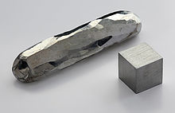

Cadmium
|  | |||||||||||||||||||||||||||||||||||||||||||||||||||||||||||||||||||||||||||||||||||||||||||||||||||||||||||||||||||||||||||||||||||||||||||||||||||||||||||||||||||||||||||||||||||||||||||||||||||||||||||||||||||||||||||||||||||||
| General properties | |||||||||||||||||||||||||||||||||||||||||||||||||||||||||||||||||||||||||||||||||||||||||||||||||||||||||||||||||||||||||||||||||||||||||||||||||||||||||||||||||||||||||||||||||||||||||||||||||||||||||||||||||||||||||||||||||||||
|---|---|---|---|---|---|---|---|---|---|---|---|---|---|---|---|---|---|---|---|---|---|---|---|---|---|---|---|---|---|---|---|---|---|---|---|---|---|---|---|---|---|---|---|---|---|---|---|---|---|---|---|---|---|---|---|---|---|---|---|---|---|---|---|---|---|---|---|---|---|---|---|---|---|---|---|---|---|---|---|---|---|---|---|---|---|---|---|---|---|---|---|---|---|---|---|---|---|---|---|---|---|---|---|---|---|---|---|---|---|---|---|---|---|---|---|---|---|---|---|---|---|---|---|---|---|---|---|---|---|---|---|---|---|---|---|---|---|---|---|---|---|---|---|---|---|---|---|---|---|---|---|---|---|---|---|---|---|---|---|---|---|---|---|---|---|---|---|---|---|---|---|---|---|---|---|---|---|---|---|---|---|---|---|---|---|---|---|---|---|---|---|---|---|---|---|---|---|---|---|---|---|---|---|---|---|---|---|---|---|---|---|---|---|---|---|---|---|---|---|---|---|---|---|---|---|---|---|---|---|
| Name, symbol | cadmium, Cd | ||||||||||||||||||||||||||||||||||||||||||||||||||||||||||||||||||||||||||||||||||||||||||||||||||||||||||||||||||||||||||||||||||||||||||||||||||||||||||||||||||||||||||||||||||||||||||||||||||||||||||||||||||||||||||||||||||||
| Pronunciation | /ˈkædmiəm/ KAD-mee-əm |
||||||||||||||||||||||||||||||||||||||||||||||||||||||||||||||||||||||||||||||||||||||||||||||||||||||||||||||||||||||||||||||||||||||||||||||||||||||||||||||||||||||||||||||||||||||||||||||||||||||||||||||||||||||||||||||||||||
| Appearance | silvery bluish-gray metallic | ||||||||||||||||||||||||||||||||||||||||||||||||||||||||||||||||||||||||||||||||||||||||||||||||||||||||||||||||||||||||||||||||||||||||||||||||||||||||||||||||||||||||||||||||||||||||||||||||||||||||||||||||||||||||||||||||||||
| Cadmium in the periodic table | |||||||||||||||||||||||||||||||||||||||||||||||||||||||||||||||||||||||||||||||||||||||||||||||||||||||||||||||||||||||||||||||||||||||||||||||||||||||||||||||||||||||||||||||||||||||||||||||||||||||||||||||||||||||||||||||||||||
|
|||||||||||||||||||||||||||||||||||||||||||||||||||||||||||||||||||||||||||||||||||||||||||||||||||||||||||||||||||||||||||||||||||||||||||||||||||||||||||||||||||||||||||||||||||||||||||||||||||||||||||||||||||||||||||||||||||||
| Atomic number | 48 | ||||||||||||||||||||||||||||||||||||||||||||||||||||||||||||||||||||||||||||||||||||||||||||||||||||||||||||||||||||||||||||||||||||||||||||||||||||||||||||||||||||||||||||||||||||||||||||||||||||||||||||||||||||||||||||||||||||
| Standard atomic weight (±) | 112.414(4)[1] | ||||||||||||||||||||||||||||||||||||||||||||||||||||||||||||||||||||||||||||||||||||||||||||||||||||||||||||||||||||||||||||||||||||||||||||||||||||||||||||||||||||||||||||||||||||||||||||||||||||||||||||||||||||||||||||||||||||
| Element category | transition metal, alternatively considered a post-transition metal | ||||||||||||||||||||||||||||||||||||||||||||||||||||||||||||||||||||||||||||||||||||||||||||||||||||||||||||||||||||||||||||||||||||||||||||||||||||||||||||||||||||||||||||||||||||||||||||||||||||||||||||||||||||||||||||||||||||
| Group, block | group 12, d-block | ||||||||||||||||||||||||||||||||||||||||||||||||||||||||||||||||||||||||||||||||||||||||||||||||||||||||||||||||||||||||||||||||||||||||||||||||||||||||||||||||||||||||||||||||||||||||||||||||||||||||||||||||||||||||||||||||||||
| Period | period 5 | ||||||||||||||||||||||||||||||||||||||||||||||||||||||||||||||||||||||||||||||||||||||||||||||||||||||||||||||||||||||||||||||||||||||||||||||||||||||||||||||||||||||||||||||||||||||||||||||||||||||||||||||||||||||||||||||||||||
| Electron configuration | [Kr] 4d10 5s2 | ||||||||||||||||||||||||||||||||||||||||||||||||||||||||||||||||||||||||||||||||||||||||||||||||||||||||||||||||||||||||||||||||||||||||||||||||||||||||||||||||||||||||||||||||||||||||||||||||||||||||||||||||||||||||||||||||||||
| per shell | 2, 8, 18, 18, 2 | ||||||||||||||||||||||||||||||||||||||||||||||||||||||||||||||||||||||||||||||||||||||||||||||||||||||||||||||||||||||||||||||||||||||||||||||||||||||||||||||||||||||||||||||||||||||||||||||||||||||||||||||||||||||||||||||||||||
| Physical properties | |||||||||||||||||||||||||||||||||||||||||||||||||||||||||||||||||||||||||||||||||||||||||||||||||||||||||||||||||||||||||||||||||||||||||||||||||||||||||||||||||||||||||||||||||||||||||||||||||||||||||||||||||||||||||||||||||||||
| Phase | solid | ||||||||||||||||||||||||||||||||||||||||||||||||||||||||||||||||||||||||||||||||||||||||||||||||||||||||||||||||||||||||||||||||||||||||||||||||||||||||||||||||||||||||||||||||||||||||||||||||||||||||||||||||||||||||||||||||||||
| Melting point | 594.22 K (321.07 °C, 609.93 °F) | ||||||||||||||||||||||||||||||||||||||||||||||||||||||||||||||||||||||||||||||||||||||||||||||||||||||||||||||||||||||||||||||||||||||||||||||||||||||||||||||||||||||||||||||||||||||||||||||||||||||||||||||||||||||||||||||||||||
| Boiling point | 1040 K (767 °C, 1413 °F) | ||||||||||||||||||||||||||||||||||||||||||||||||||||||||||||||||||||||||||||||||||||||||||||||||||||||||||||||||||||||||||||||||||||||||||||||||||||||||||||||||||||||||||||||||||||||||||||||||||||||||||||||||||||||||||||||||||||
| Density near r.t. | 8.65 g·cm−3 | ||||||||||||||||||||||||||||||||||||||||||||||||||||||||||||||||||||||||||||||||||||||||||||||||||||||||||||||||||||||||||||||||||||||||||||||||||||||||||||||||||||||||||||||||||||||||||||||||||||||||||||||||||||||||||||||||||||
| when liquid, at m.p. | 7.996 g·cm−3 | ||||||||||||||||||||||||||||||||||||||||||||||||||||||||||||||||||||||||||||||||||||||||||||||||||||||||||||||||||||||||||||||||||||||||||||||||||||||||||||||||||||||||||||||||||||||||||||||||||||||||||||||||||||||||||||||||||||
| Heat of fusion | 6.21 kJ·mol−1 | ||||||||||||||||||||||||||||||||||||||||||||||||||||||||||||||||||||||||||||||||||||||||||||||||||||||||||||||||||||||||||||||||||||||||||||||||||||||||||||||||||||||||||||||||||||||||||||||||||||||||||||||||||||||||||||||||||||
| Heat of vaporization | 99.87 kJ·mol−1 | ||||||||||||||||||||||||||||||||||||||||||||||||||||||||||||||||||||||||||||||||||||||||||||||||||||||||||||||||||||||||||||||||||||||||||||||||||||||||||||||||||||||||||||||||||||||||||||||||||||||||||||||||||||||||||||||||||||
| Molar heat capacity | 26.020 J·mol−1·K−1 | ||||||||||||||||||||||||||||||||||||||||||||||||||||||||||||||||||||||||||||||||||||||||||||||||||||||||||||||||||||||||||||||||||||||||||||||||||||||||||||||||||||||||||||||||||||||||||||||||||||||||||||||||||||||||||||||||||||
vapor pressure
|
|||||||||||||||||||||||||||||||||||||||||||||||||||||||||||||||||||||||||||||||||||||||||||||||||||||||||||||||||||||||||||||||||||||||||||||||||||||||||||||||||||||||||||||||||||||||||||||||||||||||||||||||||||||||||||||||||||||
| Atomic properties | |||||||||||||||||||||||||||||||||||||||||||||||||||||||||||||||||||||||||||||||||||||||||||||||||||||||||||||||||||||||||||||||||||||||||||||||||||||||||||||||||||||||||||||||||||||||||||||||||||||||||||||||||||||||||||||||||||||
| Oxidation states | 2, 1 (a mildly basic oxide) | ||||||||||||||||||||||||||||||||||||||||||||||||||||||||||||||||||||||||||||||||||||||||||||||||||||||||||||||||||||||||||||||||||||||||||||||||||||||||||||||||||||||||||||||||||||||||||||||||||||||||||||||||||||||||||||||||||||
| Electronegativity | Pauling scale: 1.69 | ||||||||||||||||||||||||||||||||||||||||||||||||||||||||||||||||||||||||||||||||||||||||||||||||||||||||||||||||||||||||||||||||||||||||||||||||||||||||||||||||||||||||||||||||||||||||||||||||||||||||||||||||||||||||||||||||||||
| Ionization energies | 1st: 867.8 kJ·mol−1 2nd: 1631.4 kJ·mol−1 3rd: 3616 kJ·mol−1 |
||||||||||||||||||||||||||||||||||||||||||||||||||||||||||||||||||||||||||||||||||||||||||||||||||||||||||||||||||||||||||||||||||||||||||||||||||||||||||||||||||||||||||||||||||||||||||||||||||||||||||||||||||||||||||||||||||||
| Atomic radius | empirical: 151 pm | ||||||||||||||||||||||||||||||||||||||||||||||||||||||||||||||||||||||||||||||||||||||||||||||||||||||||||||||||||||||||||||||||||||||||||||||||||||||||||||||||||||||||||||||||||||||||||||||||||||||||||||||||||||||||||||||||||||
| Covalent radius | 144±9 pm | ||||||||||||||||||||||||||||||||||||||||||||||||||||||||||||||||||||||||||||||||||||||||||||||||||||||||||||||||||||||||||||||||||||||||||||||||||||||||||||||||||||||||||||||||||||||||||||||||||||||||||||||||||||||||||||||||||||
| Van der Waals radius | 158 pm | ||||||||||||||||||||||||||||||||||||||||||||||||||||||||||||||||||||||||||||||||||||||||||||||||||||||||||||||||||||||||||||||||||||||||||||||||||||||||||||||||||||||||||||||||||||||||||||||||||||||||||||||||||||||||||||||||||||
| Miscellanea | |||||||||||||||||||||||||||||||||||||||||||||||||||||||||||||||||||||||||||||||||||||||||||||||||||||||||||||||||||||||||||||||||||||||||||||||||||||||||||||||||||||||||||||||||||||||||||||||||||||||||||||||||||||||||||||||||||||
| Crystal structure | hexagonal close-packed (hcp)
|
||||||||||||||||||||||||||||||||||||||||||||||||||||||||||||||||||||||||||||||||||||||||||||||||||||||||||||||||||||||||||||||||||||||||||||||||||||||||||||||||||||||||||||||||||||||||||||||||||||||||||||||||||||||||||||||||||||
| Speed of sound thin rod | 2310 m·s−1 (at 20 °C) | ||||||||||||||||||||||||||||||||||||||||||||||||||||||||||||||||||||||||||||||||||||||||||||||||||||||||||||||||||||||||||||||||||||||||||||||||||||||||||||||||||||||||||||||||||||||||||||||||||||||||||||||||||||||||||||||||||||
| Thermal expansion | 30.8 µm·m−1·K−1 (at 25 °C) | ||||||||||||||||||||||||||||||||||||||||||||||||||||||||||||||||||||||||||||||||||||||||||||||||||||||||||||||||||||||||||||||||||||||||||||||||||||||||||||||||||||||||||||||||||||||||||||||||||||||||||||||||||||||||||||||||||||
| Thermal conductivity | 96.6 W·m−1·K−1 | ||||||||||||||||||||||||||||||||||||||||||||||||||||||||||||||||||||||||||||||||||||||||||||||||||||||||||||||||||||||||||||||||||||||||||||||||||||||||||||||||||||||||||||||||||||||||||||||||||||||||||||||||||||||||||||||||||||
| Electrical resistivity | 72.7 nΩ·m (at 22 °C) | ||||||||||||||||||||||||||||||||||||||||||||||||||||||||||||||||||||||||||||||||||||||||||||||||||||||||||||||||||||||||||||||||||||||||||||||||||||||||||||||||||||||||||||||||||||||||||||||||||||||||||||||||||||||||||||||||||||
| Magnetic ordering | diamagnetic[2] | ||||||||||||||||||||||||||||||||||||||||||||||||||||||||||||||||||||||||||||||||||||||||||||||||||||||||||||||||||||||||||||||||||||||||||||||||||||||||||||||||||||||||||||||||||||||||||||||||||||||||||||||||||||||||||||||||||||
| Young's modulus | 50 GPa | ||||||||||||||||||||||||||||||||||||||||||||||||||||||||||||||||||||||||||||||||||||||||||||||||||||||||||||||||||||||||||||||||||||||||||||||||||||||||||||||||||||||||||||||||||||||||||||||||||||||||||||||||||||||||||||||||||||
| Shear modulus | 19 GPa | ||||||||||||||||||||||||||||||||||||||||||||||||||||||||||||||||||||||||||||||||||||||||||||||||||||||||||||||||||||||||||||||||||||||||||||||||||||||||||||||||||||||||||||||||||||||||||||||||||||||||||||||||||||||||||||||||||||
| Bulk modulus | 42 GPa | ||||||||||||||||||||||||||||||||||||||||||||||||||||||||||||||||||||||||||||||||||||||||||||||||||||||||||||||||||||||||||||||||||||||||||||||||||||||||||||||||||||||||||||||||||||||||||||||||||||||||||||||||||||||||||||||||||||
| Poisson ratio | 0.30 | ||||||||||||||||||||||||||||||||||||||||||||||||||||||||||||||||||||||||||||||||||||||||||||||||||||||||||||||||||||||||||||||||||||||||||||||||||||||||||||||||||||||||||||||||||||||||||||||||||||||||||||||||||||||||||||||||||||
| Mohs hardness | 2.0 | ||||||||||||||||||||||||||||||||||||||||||||||||||||||||||||||||||||||||||||||||||||||||||||||||||||||||||||||||||||||||||||||||||||||||||||||||||||||||||||||||||||||||||||||||||||||||||||||||||||||||||||||||||||||||||||||||||||
| Brinell hardness | 203–220 MPa | ||||||||||||||||||||||||||||||||||||||||||||||||||||||||||||||||||||||||||||||||||||||||||||||||||||||||||||||||||||||||||||||||||||||||||||||||||||||||||||||||||||||||||||||||||||||||||||||||||||||||||||||||||||||||||||||||||||
| CAS Registry Number | 7440-43-9 | ||||||||||||||||||||||||||||||||||||||||||||||||||||||||||||||||||||||||||||||||||||||||||||||||||||||||||||||||||||||||||||||||||||||||||||||||||||||||||||||||||||||||||||||||||||||||||||||||||||||||||||||||||||||||||||||||||||
| History | |||||||||||||||||||||||||||||||||||||||||||||||||||||||||||||||||||||||||||||||||||||||||||||||||||||||||||||||||||||||||||||||||||||||||||||||||||||||||||||||||||||||||||||||||||||||||||||||||||||||||||||||||||||||||||||||||||||
| Discovery and first isolation | Karl Samuel Leberecht Hermann and Friedrich Stromeyer (1817) | ||||||||||||||||||||||||||||||||||||||||||||||||||||||||||||||||||||||||||||||||||||||||||||||||||||||||||||||||||||||||||||||||||||||||||||||||||||||||||||||||||||||||||||||||||||||||||||||||||||||||||||||||||||||||||||||||||||
| Named by | Friedrich Stromeyer (1817) | ||||||||||||||||||||||||||||||||||||||||||||||||||||||||||||||||||||||||||||||||||||||||||||||||||||||||||||||||||||||||||||||||||||||||||||||||||||||||||||||||||||||||||||||||||||||||||||||||||||||||||||||||||||||||||||||||||||
| Most stable isotopes | |||||||||||||||||||||||||||||||||||||||||||||||||||||||||||||||||||||||||||||||||||||||||||||||||||||||||||||||||||||||||||||||||||||||||||||||||||||||||||||||||||||||||||||||||||||||||||||||||||||||||||||||||||||||||||||||||||||
|
|||||||||||||||||||||||||||||||||||||||||||||||||||||||||||||||||||||||||||||||||||||||||||||||||||||||||||||||||||||||||||||||||||||||||||||||||||||||||||||||||||||||||||||||||||||||||||||||||||||||||||||||||||||||||||||||||||||
| Decay modes in parentheses are predicted, but have not yet been observed | |||||||||||||||||||||||||||||||||||||||||||||||||||||||||||||||||||||||||||||||||||||||||||||||||||||||||||||||||||||||||||||||||||||||||||||||||||||||||||||||||||||||||||||||||||||||||||||||||||||||||||||||||||||||||||||||||||||
{kind=link}
Cadmium is a chemical element with symbol Cd and atomic number 48. This soft, bluish-white metal is chemically similar to the two other stable metals in group 12, zinc and mercury. Like zinc, it prefers oxidation state +2 in most of its compounds and like mercury it shows a low melting point compared to transition metals. Cadmium and its congeners are not always considered transition metals, in that they do not have partly filled d or f electron shells in the elemental or common oxidation states. The average concentration of cadmium in Earth's crust is between 0.1 and 0.5 parts per million (ppm). It was discovered in 1817 simultaneously by Stromeyer and Hermann, both in Germany, as an impurity in zinc carbonate.
Cadmium occurs as a minor component in most zinc ores and therefore is a byproduct of zinc production. It was used for a long time as a pigment and for corrosion-resistant plating on steel, whereas cadmium compounds were used to stabilize plastic. The use of cadmium is generally decreasing due to its toxicity (it is specifically listed in the European Restriction of Hazardous Substances [3]) and the replacement of nickel-cadmium batteries with nickel-metal hydride and lithium-ion batteries. One of its few new uses is in cadmium telluride solar panels. Although cadmium has no known biological function in higher organisms, a cadmium-dependent carbonic anhydrase has been found in marine diatoms.
Contents
[hide]Characteristics[edit]
Physical properties[edit]
Cadmium is a soft, malleable, ductile, bluish-white divalent metal. It is similar in many respects to zinc but forms complex compounds.[4] Unlike most other metals, cadmium is resistant to corrosion and as a result it is used as a protective layer when deposited on other metals. As a bulk metal, cadmium is insoluble in water and is not flammable; however, in its powdered form it may burn and release toxic fumes.[5]
Chemical properties[edit]
Although cadmium usually has an oxidation state of +2, it also exists in the +1 state. Cadmium and its congeners are not always considered transition metals, in that they do not have partly filled d or f electron shells in the elemental or common oxidation states.[6] Cadmium burns in air to form brown amorphous cadmium oxide (CdO); the crystalline form of this compound is a dark red which changes color when heated, similar to zinc oxide. Hydrochloric acid, sulfuric acid and nitric acid dissolve cadmium by forming cadmium chloride (CdCl2), cadmium sulfate (CdSO4), or cadmium nitrate (Cd(NO3)2). The oxidation state +1 can be reached by dissolving cadmium in a mixture of cadmium chloride and aluminium chloride, forming the Cd22+ cation, which is similar to the Hg22+ cation in mercury(I) chloride.[4]
- Cd + CdCl2 + 2 AlCl3 → Cd2(AlCl4)2
The structures of many cadmium complexes with nucleobases, amino acids and vitamins have been determined.[7]
Cadmium-selective sensors[edit]
Cadmium-selective sensors, based on the fluorophore BODIPY have been developed for imaging and sensing of cadmium in cells[8]
Isotopes[edit]
{kind=link}
Naturally occurring cadmium is composed of 8 isotopes. Two of them are naturally radioactive, and three are expected to decay but have not been experimentally confirmed to do so. The two natural radioactive isotopes are 113Cd (beta decay, half-life is 7.7 × 1015 years) and 116Cd (two-neutrino double beta decay, half-life is 2.9 × 1019 years). The other three are 106Cd, 108Cd (both double electron capture), and 114Cd (double beta decay); only lower limits on their half-life times have been set. At least three isotopes – 110Cd, 111Cd, and 112Cd – are stable. Among the isotopes that do not occur naturally, the most long-lived are 109Cd with a half-life of 462.6 days, and 115Cd with a half-life of 53.46 hours. All of the remaining radioactive isotopes have half-lives that are less than 2.5 hours, and the majority of these have half-lives that are less than 5 minutes. Cadmium has 8 known meta states, with the most stable being 113mCd (t1/2 = 14.1 years), 115mCd (t1/2 = 44.6 days), and 117mCd (t1/2 = 3.36 hours).[9]
The known isotopes of cadmium range in atomic mass from 94.950 u (95Cd) to 131.946 u (132Cd). For isotopes lighter than 112 u, the primary decay mode is electron capture and the dominant decay product is element 47 (silver). Heavier isotopes decay mostly through beta emission producing element 49 (indium).[9]
One isotope of cadmium, 113Cd, absorbs neutrons with very high probability if they have an energy below the cadmium cut-off and transmits them otherwise. The cadmium cut-off is about 0.5 eV. Neutrons with energy below the cut-off are deemed slow neutrons, distinguishing them from intermediate and fast neutrons.[10]
Cadmium is created via the long s-process in low-medium mass stars with masses of 0.6 to 10 solar masses, which lasts thousands of years. It requires a silver atom to capture a neutron and then undergo beta decay.[11]
History[edit]
{kind=link}
Cadmium (Latin cadmia, Greek καδμεία meaning "calamine", a cadmium-bearing mixture of minerals, which was named after the Greek mythological character Κάδμος, Cadmus, the founder of Thebes) was discovered simultaneously in 1817 by Friedrich Stromeyer[12] and Karl Samuel Leberecht Hermann, both in Germany, as an impurity in zinc carbonate.[3] Stromeyer found the new element as an impurity in zinc carbonate (calamine), and, for 100 years, Germany remained the only important producer of the metal. The metal was named after the Latin word for calamine, because it was found in this zinc compound. Stromeyer noted that some impure samples of calamine changed color when heated but pure calamine did not. He was persistent in studying these results and eventually isolated cadmium metal by roasting and reduction of the sulfide. The possibility to use cadmium yellow as pigment was recognized in the 1840s but the lack of cadmium limited this application.[13][14][15]
Even though cadmium and its compounds may be toxic in certain forms and concentrations, the British Pharmaceutical Codex from 1907 states that cadmium iodide was used as a medication to treat "enlarged joints, scrofulous glands, and chilblains".[16]
In 1907, the International Astronomical Union defined the international ångström in terms of a red cadmium spectral line (1 wavelength = 6438.46963 Å).[17][18] This was adopted by the 7th General Conference on Weights and Measures in 1927. In 1960, the definitions of both the metre and ångström were changed to use krypton.[19]
After the industrial scale production of cadmium started in the 1930s and 1940s, the major application of cadmium was the coating of iron and steel to prevent corrosion; in 1944, 62% and in 1956, 59% of the cadmium in the United States was for coating.[3][20] In 1956, 24% of the cadmium used within the United States was used for the second application, which was for red, orange and yellow pigments based on sulfides and selenides of cadmium.[20] The stabilizing effect of cadmium-containing chemicals like the carboxylates cadmium laureate and cadmium stearate on PVC led to an increased use of those compounds in the 1970s and 1980s. The use of cadmium in applications such as pigments, coatings, stabilizers and alloys declined due to environmental and health regulations in the 1980s and 1990s; in 2006, only 7% of total cadmium consumption was used for plating and coating and only 10% was used for pigments.[3] The decrease in consumption in other applications was made up by a growing demand of cadmium in nickel-cadmium batteries, which accounted for 81% of the cadmium consumption in the United States in 2006.[21]
Occurrence[edit]
{kind=link}
Cadmium makes up about 0.1 ppm of Earth's crust. Compared with the more abundant 65 ppm zinc, cadmium is rare.[22] No significant deposits of cadmium-containing ores are known. Greenockite (CdS), the only cadmium mineral of importance, is nearly always associated with sphalerite (ZnS). This association is caused by the geochemical similarity between zinc and cadmium which makes geological separation unlikely. As a consequence, cadmium is produced mainly as a byproduct from mining, smelting, and refining sulfidic ores of zinc, and, to a lesser degree, lead and copper. Small amounts of cadmium, about 10% of consumption, are produced from secondary sources, mainly from dust generated by recycling iron and steel scrap. Production in the United States began in 1907,[15] but it was not until after World War I that cadmium came into wide use.[23][24] One place where metallic cadmium can be found is the Vilyuy River basin in Siberia.[25]
Rocks mined to produce phosphate fertilizers contain varying amounts of cadmium, leading to a cadmium concentration of up to 300 mg/kg in the produced phosphate fertilizers and thus in the high cadmium content in agricultural soils.[26][27] Coal can contain significant amounts of cadmium, which ends up mostly in the flue dust.[28]
Production[edit]
The British Geological Survey reports that in 2001, China was the top producer of cadmium, producing almost one-sixth of the world share, closely followed by South Korea and Japan.[29]
Cadmium is a common impurity in zinc ores, and it is most often isolated during the production of zinc. Some zinc ores concentrates from sulfidic zinc ores contain up to 1.4% of cadmium.[30] In the 1970s, the output of cadmium was 6.5 pounds per ton of zinc.[30] Zinc sulfide ores are roasted in the presence of oxygen, converting the zinc sulfide to the oxide. Zinc metal is produced either by smelting the oxide with carbon or by electrolysis in sulfuric acid. Cadmium is isolated from the zinc metal by vacuum distillation if the zinc is smelted, or cadmium sulfate is precipitated out of the electrolysis solution.[24][31]
-
World production trend
-
Cadmium output in 2005
{kind=link}
{kind=link}
Applications[edit]
Cadmium has many common industrial uses as it is a key component in battery production, is present in cadmium pigments,[32] coatings,[33] and is commonly used in electroplating.[34]
Batteries[edit]
{kind=link}
In 2009, 86% of cadmium was used in batteries, predominantly in rechargeable nickel-cadmium batteries. Nickel-cadmium cells have a nominal cell potential of 1.2 V. The cell consists of a positive nickel hydroxide electrode and a negative cadmium electrode plate separated by an alkaline electrolyte (potassium hydroxide).[35] The European Union set the allowed use of cadmium in electronics in 2004 to limits of 0.01%,[36] with several exceptions, but reduced the allowed content of cadmium in batteries to 0.002%.[37]
Electroplating[edit]
{kind=link}
Cadmium electroplating, consuming 6% of the global production, can be found in the aircraft industry due to the ability to resist corrosion when applied to steel components.[34] This coating is passivated by the usage of chromate salts.[33] A limitation of cadmium plating is hydrogen embrittlement of high-strength steels caused by the electroplating process. Therefore, steel parts heat-treated to tensile strength above 1300 MPa (200 ksi) should be coated by an alternative method (such as special low-embrittlement cadmium electroplating processes or physical vapor deposition). In addition, titanium embrittlement caused by cadmium-plated tool residues resulted in banishment of these tools (along with routine tool testing programs to detect any cadmium contamination) from the A-12/SR-71 and U-2 programs, and subsequent aircraft programs using titanium.[38]
Nuclear fission[edit]
Cadmium is used as a barrier to control neutrons in nuclear fission.[34] The pressurized water reactor designed by Westinghouse Electric Company uses an alloy consisting of 80% silver, 15% indium, and 5% cadmium.[34]
Compounds[edit]
{kind=link}
Cadmium oxide is used in black and white television phosphors and in the blue and green phosphors for color television picture tubes.[39] Cadmium sulfide (CdS) is used as a photoconductive surface coating for photocopier drums.[40]
{kind=link}
In paint pigments, cadmium forms various salts, with CdS being the most common. This sulfide is used as a yellow pigment. Cadmium selenide can be used as red pigment, commonly called cadmium red. To painters who work with the pigment, cadmium yellows, oranges, and reds are the most brilliant and long-lasting colors to use. In fact, during production, these colors are significantly toned down before they are ground with oils and binders, or blended into watercolors, gouaches, acrylics, and other paint and pigment formulations. Because these pigments are potentially toxic, it is recommended to use a barrier cream on the hands to prevent absorption through the skin when working with them[32] even though the amount of cadmium absorbed into the body through the skin is usually reported to be less than 1%.[5]
In PVC, cadmium was used as heat, light, and weathering stabilizers.[34][41] Currently, cadmium stabilizers have been completely replaced with barium-zinc, calcium-zinc and organo-tin stabilizers. Cadmium is used in many kinds of solder and bearing alloys, due to a low coefficient of friction and fatigue resistance.[34] It is also found in some of the lowest-melting alloys, such as Wood's metal.[42]
Laboratory uses[edit]
{kind=link}
Helium–cadmium lasers are a common source of blue-ultraviolet laser light. They operate at either 325 or 422 nm and are used in fluorescence microscopes and various laboratory experiments.[43][44] Cadmium selenide quantum dots emit bright luminescence under UV excitation (He-Cd laser, for example). The color of this luminescence can be green, yellow or red depending on the particle size. Colloidal solutions of those particles are used for imaging of biological tissues and solutions with a fluorescence microscope.[45]
Cadmium is a component of some compound semiconductors, such as cadmium sulfide, cadmium selenide, and cadmium telluride, which can be used for light detection or solar cells. HgCdTe is sensitive to infrared[34] light and therefore may be utilized as an infrared detector or switch for example in remote control devices.
In molecular biology, cadmium is used to block voltage-dependent calcium channels from fluxing calcium ions, as well as in hypoxia research to stimulate proteasome-dependent degradation of Hif-1α.[46]
Biological role[edit]
Cadmium has no known useful role in higher organisms,[47] but a cadmium-dependent carbonic anhydrase has been found in some marine diatoms.[48] The diatoms live in environments with very low zinc concentrations and cadmium performs the function normally carried out by zinc in other anhydrases. The discovery was made using X-ray absorption fluorescence spectroscopy (XAFS).[48][49]
The highest concentration of cadmium has been found to be absorbed in the kidneys of humans, and up to about 30 mg of cadmium is commonly inhaled throughout childhood and adolescence.[50] Cadmium can be used to block calcium channels in chicken neurons.[51] Analytical methods for the determination of cadmium in biological samples have been reviewed.[52]
Environment[edit]
The biogeochemistry of cadmium and its release to the environment has been the subject of review, as has the speciation of cadmium in the environment.[53][54]
Safety[edit]
The bioinorganic aspects of cadmium toxicity have been reviewed.[55]
The most dangerous form of occupational exposure to cadmium is inhalation of fine dust and fumes, or ingestion of highly soluble cadmium compounds.[3] Inhalation of cadmium-containing fumes can result initially in metal fume fever but may progress to chemical pneumonitis, pulmonary edema, and death.[56]
Cadmium is also an environmental hazard. Human exposures to environmental cadmium are primarily the result of fossil fuel combustion, phosphate fertilizers, natural sources, iron and steel production, cement production and related activities, nonferrous metals production, and municipal solid waste incineration.[3] Bread, root crops, and vegetables also contribute to the cadmium in modern populations.[57] There have been a few instances of general population toxicity as the result of long-term exposure to cadmium in contaminated food and water, and research is ongoing regarding the estrogen mimicry that may induce breast cancer.[57] In the decades leading up to World War II, mining operations contaminated the Jinzū River in Japan with cadmium and traces of other toxic metals. As a consequence, cadmium accumulated in the rice crops growing along the riverbanks downstream of the mines. Some members of the local agricultural communities consuming the contaminated rice developed itai-itai disease and renal abnormalities, including proteinuria and glucosuria.[58]
{kind=link}
The victims of this poisoning were almost exclusively post-menopausal women with low iron and other mineral body stores. Similar general population cadmium exposures in other parts of the world have not resulted in the same health problems because the populations maintained sufficient iron and other mineral levels. Thus, although cadmium is a major factor in the itai-itai disease in Japan, most researchers have concluded that it was one of several factors.[3] Cadmium is one of six substances banned by the European Union's Restriction on Hazardous Substances (RoHS) directive, which bans certain hazardous substances in electrical and electronic equipment but allows for certain exemptions and exclusions from the scope of the law.[59] The International Agency for Research on Cancer has classified cadmium and cadmium compounds as carcinogenic to humans.[60] Although occupational exposure to cadmium is linked to lung and prostate cancer, there is still a substantial controversy about the carcinogenicity of cadmium in low, environmental exposure. Recent data from epidemiological studies suggest that intake of cadmium through diet associates to higher risk of endometrial, breast and prostate cancer as well as to osteoporosis in humans.[61][62][63][64] A recent study has demonstrated that endometrial tissue is characterized by higher levels of cadmium in current and former smoking females.[65]
Although some epidemiological studies show a significant correlation between cadmium exposure and occurrence of disease conditions in human populations, a causative role for cadmium as the factor behind these effects remains yet to be shown. In order to prove a causative role, it will be important to define the molecular mechanisms through which cadmium in low exposure can cause adverse health effects. One hypothesis is that cadmium works as an endocrine disruptor because some experimental studies have shown that it can interact with different hormonal signaling pathways. For example, cadmium can bind to the estrogen receptor alpha,[66][67] and affect signal transduction along the estrogen and MAPK signaling pathways at low doses.[68][69][70]
Tobacco smoking is the most important single source of cadmium exposure in the general population. It has been estimated that about 10% of the cadmium content of a cigarette is inhaled through smoking. The absorption of cadmium from the lungs is much more effective than that from the gut, and as much as 50% of the cadmium inhaled via cigarette smoke may be absorbed.[71] On average, smokers have 4–5 times higher blood cadmium concentrations and 2–3 times higher kidney cadmium concentrations than non-smokers. Despite the high cadmium content in cigarette smoke, there seems to be little exposure to cadmium from passive smoking. No significant effect on blood cadmium concentrations has been detected in children exposed to environmental tobacco smoke.[72]
In the non-smoking part of the population food is the biggest source of exposure to cadmium. High quantities of cadmium can be found for example in crustaceans, molluscs, offals, and algal products. However, due to the higher consumption the most significant contributors to the dietary cadmium exposure are grains, vegetables, and starchy roots and tubers.[73]
Cadmium exposure is a risk factor associated with early atherosclerosis and hypertension, which can both lead to cardiovascular disease.[74]
Regulations[edit]
Due to the adverse effects on the environment and human health, the supply and use of cadmium is restricted in Europe under the REACH Regulation.[75]
The EFSA Panel on Contaminants in the Food Chain has set 2.5 μg/kg body weight as a tolerable weekly intake for humans.[73] In comparison, the Joint FAO/WHO Expert Committee on Food Additives has established 7 μg/kg bw as a provisional tolerable weekly intake level.[76]
Product recalls[edit]
In May 2006, a sale of the seats from Arsenal F.C.'s old stadium, Highbury in London, England was cancelled after the seats were discovered to contain trace amounts of cadmium.[77] Reports of high levels of cadmium use in children's jewelry in 2010 led to a US Consumer Product Safety Commission investigation.[78] The U.S. CPSC issued specific recall notices for cadmium content applying to jewelry sold by Claire's[79] and Wal-Mart[80] stores. In June 2010, McDonald's voluntarily recalled more than 12 million promotional "Shrek Forever After 3D" Collectable Drinking Glasses owing to concerns over cadmium levels in paint pigments used on the glassware.[81] The glasses were manufactured by Arc International, of Millville, NJ, USA.[82]
See also[edit]
References[edit]
- Jump up ^ Standard Atomic Weights 2013. Commission on Isotopic Abundances and Atomic Weights
- Jump up ^ Lide, D. R., ed. (2005). "Magnetic susceptibility of the elements and inorganic compounds". CRC Handbook of Chemistry and Physics (PDF) (86th ed.). Boca Raton (FL): CRC Press. ISBN 0-8493-0486-5.
- ^ Jump up to: a b c d e f g Morrow, H. (2010). "Cadmium and Cadmium Alloys". Kirk-Othmer Encyclopedia of Chemical Technology. John Wiley & Sons. pp. 1–36. doi:10.1002/0471238961.0301041303011818.a01.pub3. ISBN 978-0-471-23896-6.
- ^ Jump up to: a b Holleman, A. F.; Wiberg, E; Wiberg, Nils (1985). "Cadmium". Lehrbuch der Anorganischen Chemie, 91–100 (in German). Walter de Gruyter. pp. 1056–1057. ISBN 978-3-11-007511-3.
- ^ Jump up to: a b "Case Studies in Environmental Medicine (CSEM) Cadmium". Agency for Toxic Substances and Disease Registry. Archived from the original on 6 June 2011. Retrieved 30 May 2011.
- Jump up ^ Cotton, F. A. (1999). "Survey of Transition-Metal Chemistry". Advanced Inorganic Chemistry (6th ed.). John Wiley and Sons. p. 633. ISBN 0-471-19957-5.
- Jump up ^ Carballo, Rosa; Castiñeras, Alfonso; Domínguez-Martin, Alicia; García-Santos, Isabel; Niclós-Guttiérrez, Juan (2013). "Chapter 7. Solid state structures of cadmium complexes with relevance to biological systems". In Astrid Sigel; Helmut Sigel; Roland K. O. Sigel. Cadmium: From Toxicology to Essentiality. Metal Ions in Life Sciences 11. Springer. pp. 145–189. doi:10.1007/978-94-007-5179-8_7.
- Jump up ^ Taki, Masayasu (2013). "Chapter 5. Imaging and sensing of cadmium in cells". In Astrid Sigel; Helmut Sigel; Roland K. O. Sigel. Cadmium: From Toxicology to Essentiality. Metal Ions in Life Sciences 11. Springer. p. 99115. doi:10.1007/978-94-007-5179-8_5.
- ^ Jump up to: a b Audi, G.; Bersillon, O.; Blachot, J.; Wapstra, A.H. (2003). "The NUBASE Evaluation of Nuclear and Decay Properties". Nuclear Physics A 729 (1): 3–128. Bibcode:2003NuPhA.729....3A. doi:10.1016/j.nuclphysa.2003.11.001.
- Jump up ^ Knoll, G. F. (2000). Radiation Detection and Measurement. Wiley. p. 505. ISBN 978-0-471-07338-3.
- Jump up ^ Padmanabhan, T. (2001). "Stellar Nucleosynthesis". Theoretical Astrophysics, Volume II: Stars and Stellar Systems. Cambridge University Press. pp. 230–236. ISBN 978-0-521-56631-5.
- Jump up ^ Hermann, C. S. (1818). "Noch ein schreiben über das neue Metall". Annalen der Physik 59 (5): 113. Bibcode:1818AnP....59..113H. doi:10.1002/andp.18180590511.
- Jump up ^ Waterston, W.; Burton, J. H (1844). Cyclopædia of commerce, mercantile law, finance, commercial geography and navigation. H. G. Bohn. p. 122.
- Jump up ^ Rowbotham, T.; Rowbotham, T. L. (1850). The Art of Landscape Painting in Water Colours. Windsor and Newton. p. 10.
- ^ Jump up to: a b Ayres, R. U.; Ayres, L.; Råde, I. (2003). The Life Cycle of Copper, Its Co-Products and Byproducts. Springer. pp. 135–141. ISBN 978-1-4020-1552-6.
- Jump up ^ Dunglison, R. (1866). Medical Lexicon: A Dictionary of Medical Science. Henry C. Lea. p. 159.
- Jump up ^ "International Angstrom". Science Dictionary. 2013-09-14. Retrieved 2014-09-24.
- Jump up ^ "angstrom or ångström". Sizes.com. 2010-10-28. Retrieved 2014-09-24.
- Jump up ^ Burdun, G. D. (1958). "On the new determination of the meter" (PDF). Measurement Techniques 1 (3): 259–264. doi:10.1007/BF00974680.
- ^ Jump up to: a b Lansche, A. M. (1956). "Cadmium". Minerals Yearbook, Volume I: Metals and Minerals (Except Fuels). United States Geological Survey. Retrieved 21 April 2008.
- Jump up ^ "USGS Mineral Information: Cadmium". United States Geological Survey. Retrieved 8 August 2009.
- Jump up ^ Wedepohl, K. H. (1995). "The composition of the continental crust". Geochimica et Cosmochimica Acta 59 (7): 1217–1232. Bibcode:1995GeCoA..59.1217W. doi:10.1016/0016-7037(95)00038-2.
- Jump up ^ Plachy, J. (1998). "Annual Average Cadmium Price" (PDF). U.S. Geological Survey. pp. 17–19. Retrieved 16 June 2010.
- ^ Jump up to: a b Fthenakis, V. M. (2004). "Life cycle impact analysis of cadmium in CdTe PV production". Renewable and Sustainable Energy Reviews 8 (4): 303. doi:10.1016/j.rser.2003.12.001.
- Jump up ^ Fleischer, M; Cabri, L. J.; Chao, G. Y.; Pabst, A. (1980). "New Mineral Names" (PDF). American Mineralogist 65: 1065–1070.
- Jump up ^ Grant, C. A.; Sheppard, S. C. (2008). "Fertilizer impacts on cadmium availability in agricultural soils and crops". Human and Ecological Risk Assessment 14 (2): 210–228. doi:10.1080/10807030801934895.
- Jump up ^ Jiao, Y.; Grant, C. A.; Bailey, L. D. (2004). "Effects of phosphorus and zinc fertilizer on cadmium uptake and distribution in flax and durum wheat". Journal of the Science of Food and Agriculture 84 (8): 777–785. doi:10.1002/jsfa.1648.
- Jump up ^ Bettinelli, M.; Baroni, U.; Pastorelli, N. (1988). "Determination of arsenic, cadmium, lead, antimony, selenium and thallium in coal fly ash using the stabilised temperature platform furnace and Zeeman-effect background correction". Journal of Analytical Atomic Spectrometry 3 (7): 1005–1011. doi:10.1039/JA9880301005.
- Jump up ^ Hetherington, L. E. et al. (2008). "Production of Cadmium". World Mineral Production 2002–06 (PDF). British Geological Survey. p. 15. Retrieved 15 April 2012.
- ^ Jump up to: a b Golberg, D. C. et al. (1969). Trends in Usage of Cadmium: Report. US NRC/NAS/NAE. pp. 1–3.
- Jump up ^ Scoullos, M. J. (2001). Mercury, Cadmium, Lead: Handbook for Sustainable Heavy Metals Policy and Regulation. Springer. pp. 104–116. ISBN 978-1-4020-0224-3.
- ^ Jump up to: a b Buxbaum, Gunter; Pfaff, Gerhard (2005). "Cadmium Pigments". Industrial inorganic pigments. Wiley-VCH. pp. 121–123. ISBN 978-3-527-30363-2.
- ^ Jump up to: a b Smith C.J.E.; Higgs M.S.; Baldwin K.R. (20 April 1999). "Advances to Protective Coatings and their Application to Ageing Aircraft" (PDF). RTO MP-25. Retrieved 29 May 2011.
- ^ Jump up to: a b c d e f g Scoullos, Michael J.; Vonkeman, Gerrit H.; Thornton, Iain; Makuch, Zen (2001). Mercury, Cadmium, Lead: Handbook for Sustainable Heavy Metals Policy and Regulation. Springer. ISBN 978-1-4020-0224-3.
- Jump up ^ Krishnamurthy, N (July 2, 2013). Engg. Chemistry, 2/e. New York: PHI Learning Private Limited. pp. 82–83. ISBN 978-81-203-3666-7.
- Jump up ^ http://eur-lex.europa.eu/legal-content/en/ALL/;jsessionid=VN9WTn1VHCtTbGnQpnkrTsj2gh68QzJf581nbhhVpJSLNn2sLJsy!-561601488?uri=CELEX:32011L0065
- Jump up ^ [1]
- Jump up ^ "CIA – Breaking Through Technological Barriers – Finding The Right Metal (A-12 program)". 1 October 2007.
- Jump up ^ Lee, Ching-Hwa; Hsi, CS (2002). "Recycling of Scrap Cathode Ray Tubes". Environmental Science & Technology 36 (1): 69–75. Bibcode:2002EnST...36...69L. doi:10.1021/es010517q. PMID 11811492.
- Jump up ^ Miller, L. S.; Mullin, J. B. (1991). "Crystalline Cadmium Sulfide". Electronic materials: from silicon to organics. Springer. p. 273. ISBN 978-0-306-43655-0.
- Jump up ^ Jennings, Thomas C. (2005). "Cadmium Environmental Concerns". PVC handbook. Hanser Verlag. p. 149. ISBN 978-1-56990-379-7.
- Jump up ^ Brady, George Stuart; Brady, George S.; Clauser, Henry R.; Vaccari, John A. (2002). Materials handbook: an encyclopedia for managers, technical professionals, purchasing and production managers, technicians, and supervisors. McGraw-Hill Professional. p. 425. ISBN 978-0-07-136076-0.
- Jump up ^ "Helium-Cadmium Lasers". Olympus. Retrieved 14 May 2011.
- Jump up ^ Nambiar, K.R (2006). "Helium-cadmium Laser". Lasers: Principles, Types and Applications. ISBN 978-81-224-1492-9.
- Jump up ^ "Cadmium Selenium Testing for Microbial Contaminants". NASA. 10 June 2003.
- Jump up ^ Park J. W., Chun Y. S.; Choi, E; Kim, G. T.; Choi, H.; Kim, C. H.; Lee, M. J.; Kim, M. S.; Park, J. W. (2000). "Cadmium blocks hypoxia-inducible factor (HIF)-1-mediated response to hypoxia by stimulating the proteasome-dependent degradation of HIF-1alpha". European Journal of Biochemistry 267 (13): 4198–4204. doi:10.1046/j.1432-1327.2000.01453.x. PMID 10866824.
- Jump up ^ Hogan, C. Michael (2010). Heavy metal. Encyclopedia of Earth. National Council for Science and the Environment. E. Monosson and C. Cleveland (eds.). Washington DC.
- ^ Jump up to: a b Lane, Todd W.; Saito, Mak A.; George, Graham N.; Pickering, Ingrid J.; Prince, Roger C.; Morel, François M. M. (2005). "A cadmium enzyme from a marine diatom" (PDF). Nature 435 (42): 42. Bibcode:2005Natur.435...42L. doi:10.1038/435042a. PMID 15875011.
- Jump up ^ Lane, Todd W.; Morel, F. M. (2000). "A biological function for cadmium in marine diatoms" (PDF). Proc. Natl. Acad. Sci. 97 (9): 4627–4631. Bibcode:2000PNAS...97.4627L. doi:10.1073/pnas.090091397. PMC 18283. PMID 10781068.
- Jump up ^ Perry, HM Jr.; Thind, GS; Perry, EF (1976). "The biology of cadmium". The Medical clinics of North America 60 (4): 759–69. PMID 775217.
- Jump up ^ Swandulla, D.; Armstrong, C. M. (1989). "Calcium channel block by cadmium in chicken sensory neurons" (PDF). Proc. Natl. Acad. Sci. 86 (5): 1736–1740. Bibcode:1989PNAS...86.1736S. doi:10.1073/pnas.86.5.1736. PMC 286776. PMID 2537985.
- Jump up ^ Klotz, Katrin; Weistenhöfer, Wobbeke; Drexler, Hans (2013). "Chapter 4. Determination of Cadmium in Biological Samples". In Astrid Sigel; Helmut Sigel; Roland K. O. Sigel. Cadmium: From Toxicology to Essentiality. Metal Ions in Life Sciences 11. Springer. pp. 85–98. doi:10.1007/978-94-007-5179-8_4.
- Jump up ^ Cullen, Jay T.; Maldonado, Maria T. (2013). "Chapter 2. Biogeochemistry of Cadmium and its Release to the Environment". In Astrid Sigel; Helmut Sigel; Roland K. O. Sigel. Cadmium: From Toxicology to Essentiality. Metal Ions in Life Sciences 11. Springer. pp. 31–62. doi:10.1007/978-94-007-5179-8_2.
- Jump up ^ Crea, Francesco; Foti, Claudia; Milea, Demetrio; Sammartano, Silvio (2013). "Chapter 3. Speciation of Cadmium in the Environment". In Astrid Sigel; Helmut Sigel; Roland K. O. Sigel. Cadmium: From Toxicology to Essentiality. Metal Ions in Life Sciences 11. Springer. pp. 63–83. doi:10.1007/978-94-007-5179-8_3.
- Jump up ^ Maret, Wolfgang; Moulis, Jean-Marc (2013). "Chapter 1. The Bioinorganic Chemistry of Cadmium in the Context of its Toxicity". In Astrid Sigel; Helmut Sigel; Roland K. O. Sigel. Cadmium: From Toxicology to Essentiality. Metal Ions in Life Sciences 11. Springer. pp. 1–30. doi:10.1007/978-94-007-5179-8_1.
- Jump up ^ Hayes, Andrew Wallace (2007). Principles and Methods of Toxicology. Philadelphia: CRC Press. pp. 858–861. ISBN 978-0-8493-3778-9.
- ^ Jump up to: a b Mann, Denise (23 April 2012) Can Heavy Metal in Foods, Cosmetics Spur Breast Cancer Spread? HealthDayBy via Yahoo
- Jump up ^ Nogawa, Koji; Kobayashi, E; Okubo, Y; Suwazono, Y (2004). "Environmental cadmium exposure, adverse effects, and preventative measures in Japan". Biometals 17 (5): 581–587. doi:10.1023/B:BIOM.0000045742.81440.9c. PMID 15688869.
- Jump up ^ "European Commission Decision of 12 October 2006 amending, for the purposes of adapting to technical progress, the Annex to Directive 2002/95/EC of the European Parliament and of the Council as regards exemptions for applications of lead and cadmium (notified under document number C(2006) 4790)". Journal of the European Union. 14 October 2006.
- Jump up ^ IARC Monographs on the Evaluation of Carcinogenic Risks to Humans, Volume 58
- Jump up ^ Julin, B; Wolk, A; Johansson, J. E.; Andersson, S. O.; Andrén, O; Akesson, A (2012). "Dietary cadmium exposure and prostate cancer incidence: A population-based prospective cohort study". British journal of cancer 107 (5): 895–900. doi:10.1038/bjc.2012.311. PMC 3425979. PMID 22850555.
- Jump up ^ Engström, A; Michaëlsson, K; Vahter, M; Julin, B; Wolk, A; Åkesson, A (2012). "Associations between dietary cadmium exposure and bone mineral density and risk of osteoporosis and fractures among women". Bone 50 (6): 1372–8. doi:10.1016/j.bone.2012.03.018. PMID 22465267.
- Jump up ^ Julin, B; Wolk, A; Bergkvist, L; Bottai, M; Akesson, A (2012). "Dietary cadmium exposure and risk of postmenopausal breast cancer: A population-based prospective cohort study". Cancer research 72 (6): 1459–66. doi:10.1158/0008-5472.CAN-11-0735. PMID 22422990.
- Jump up ^ Akesson, A; Julin, B; Wolk, A (2008). "Long-term dietary cadmium intake and postmenopausal endometrial cancer incidence: A population-based prospective cohort study". Cancer research 68 (15): 6435–41. doi:10.1158/0008-5472.CAN-08-0329. PMID 18676869.
- Jump up ^ Rzymski, P; Rzymski, P; Tomczyk, K; Niedzielski, P; Jakubowski, K; Poniedziałek, B; Opala, T (2014). "Metal status in human endometrium: Relation to cigarette smoking and histological lesions". Environmental Research 132: 328–33. doi:10.1016/j.envres.2014.04.025. PMID 24834829.
- Jump up ^ Fechner, P; Damdimopoulou, P; Gauglitz, G (2011). "Biosensors paving the way to understanding the interaction between cadmium and the estrogen receptor alpha". PloS one 6 (8): e23048. doi:10.1371/journal.pone.0023048. PMC 3149063. PMID 21829690.
- Jump up ^ Stoica, A; Katzenellenbogen, B. S.; Martin, M. B. (2000). "Activation of estrogen receptor-alpha by the heavy metal cadmium". Molecular endocrinology (Baltimore, Md.) 14 (4): 545–53. doi:10.1210/mend.14.4.0441. PMID 10770491.
- Jump up ^ Ali, I; Penttinen-Damdimopoulou, P. E.; Mäkelä, S. I.; Berglund, M; Stenius, U; Akesson, A; Håkansson, H; Halldin, K (2010). "Estrogen-like effects of cadmium in vivo do not appear to be mediated via the classical estrogen receptor transcriptional pathway". Environmental health perspectives 118 (10): 1389–94. doi:10.1289/ehp.1001967. PMC 2957917. PMID 20525538.
- Jump up ^ Ali, I; Damdimopoulou, P; Stenius, U; Adamsson, A; Mäkelä, S. I.; Åkesson, A; Berglund, M; Håkansson, H; Halldin, K (2012). "Cadmium-induced effects on cellular signaling pathways in the liver of transgenic estrogen reporter mice". Toxicological sciences : an official journal of the Society of Toxicology 127 (1): 66–75. doi:10.1093/toxsci/kfs077. PMID 22314386.
- Jump up ^ Johnson, M. D.; Kenney, N; Stoica, A; Hilakivi-Clarke, L; Singh, B; Chepko, G; Clarke, R; Sholler, P. F.; Lirio, A. A.; Foss, C; Reiter, R; Trock, B; Paik, S; Martin, M. B. (2003). "Cadmium mimics the in vivo effects of estrogen in the uterus and mammary gland". Nature medicine 9 (8): 1081–4. doi:10.1038/nm902. PMID 12858169.
- Jump up ^ Friberg, L. (1983). "Cadmium". Annual Review of Public Health 4: 367–367. doi:10.1146/annurev.pu.04.050183.002055. PMID 6860444.
- Jump up ^ Jarup, L. (1998). "Health effects of cadmium exposure—a review of the literature and a risk estimate". Scandinavian Journal of Work, Environment and Health 24: 11–51.
- ^ Jump up to: a b http://www.efsa.europa.eu/en/efsajournal/pub/2551.htm
- Jump up ^ Cadmium Exposure can Induce Early Atherosclerotic Changes, Medinews Direct, 7 September 2009
- Jump up ^ EUR-Lex. Eur-lex.europa.eu (18 April 2011). Retrieved on 5 June 2011.
- Jump up ^ http://www.inchem.org/documents/jecfa/jeceval/jec_297.htm
- Jump up ^ "Toxic fears hit Highbury auction". BBC Sport. 10 May 2006. Retrieved 29 November 2010.
- Jump up ^ "U.S. to Develop Safety Standards for Toxic Metals". Business Week. 12 January 2010. Retrieved 12 January 2010.
- Jump up ^ "Claire's Recalls Children's Metal Charm Bracelets Due to High Levels of Cadmium". U.S. Consumer Product Safety Commission. 10 May 2010. Retrieved 5 June 2010.
- Jump up ^ "FAF Inc. Recalls Children's Necklaces Sold Exclusively at Walmart Stores Due to High Levels of Cadmium". U.S. Consumer Product Safety Commission. 29 January 2010. Retrieved 5 June 2010.
- Jump up ^ Neuman, William (4 June 2010). "McDonald’s Recalls 12 Million ‘Shrek’ Glasses". The New York Times. Retrieved 5 June 2010.
- Jump up ^ "McDonald’s Recalls Movie Themed Drinking Glasses Due to Potential Cadmium Risk". U.S. Consumer Product Safety Commission. 4 June 2010. Retrieved 5 June 2010.
Further reading[edit]
- Hartwig, Andrea (2013). "Chapter 15. Cadmium and cancer". In Astrid Sigel; Helmut Sigel; Roland K. O. Sigel. Cadmium: From Toxicology to Essentiality. Metal Ions in Life Sciences 11. Springer. pp. 491–507. doi:10.1007/978-94-007-5179-8_15.
External links[edit]
| Look up cadmium in Wiktionary, the free dictionary. |
| Wikimedia Commons has media related to Cadmium. |
| Wikisource has the text of the 1911 Encyclopædia Britannica article Cadmium. |
- Cadium at The Periodic Table of Videos (University of Nottingham)
- ATSDR Case Studies in Environmental Medicine: Cadmium Toxicity U.S. Department of Health and Human Services
- Agency for Toxic Substances and Disease Registry’s (ATSDR) Toxicological Profile for Cadmium
- National Institute for Occupational Safety and Health – Cadmium Page
- NLM Hazardous Substances Databank – Cadmium, Elemental
| [hide] Periodic table (Large cells) | |||||||||||||||||||||||||||||||||
|---|---|---|---|---|---|---|---|---|---|---|---|---|---|---|---|---|---|---|---|---|---|---|---|---|---|---|---|---|---|---|---|---|---|
| 1 | 2 | 3 | 4 | 5 | 6 | 7 | 8 | 9 | 10 | 11 | 12 | 13 | 14 | 15 | 16 | 17 | 18 | ||||||||||||||||
| 1 | H | He | |||||||||||||||||||||||||||||||
| 2 | Li | Be | B | C | N | O | F | Ne | |||||||||||||||||||||||||
| 3 | Na | Mg | Al | Si | P | S | Cl | Ar | |||||||||||||||||||||||||
| 4 | K | Ca | Sc | Ti | V | Cr | Mn | Fe | Co | Ni | Cu | Zn | Ga | Ge | As | Se | Br | Kr | |||||||||||||||
| 5 | Rb | Sr | Y | Zr | Nb | Mo | Tc | Ru | Rh | Pd | Ag | Cd | In | Sn | Sb | Te | I | Xe | |||||||||||||||
| 6 | Cs | Ba | La | Ce | Pr | Nd | Pm | Sm | Eu | Gd | Tb | Dy | Ho | Er | Tm | Yb | Lu | Hf | Ta | W | Re | Os | Ir | Pt | Au | Hg | Tl | Pb | Bi | Po | At | Rn | |
| 7 | Fr | Ra | Ac | Th | Pa | U | Np | Pu | Am | Cm | Bk | Cf | Es | Fm | Md | No | Lr | Rf | Db | Sg | Bh | Hs | Mt | Ds | Rg | Cn | 113 | Fl | 115 | Lv | 117 | 118 | |
|
|
|||||||||||||||||||||||||||||||||
|
||